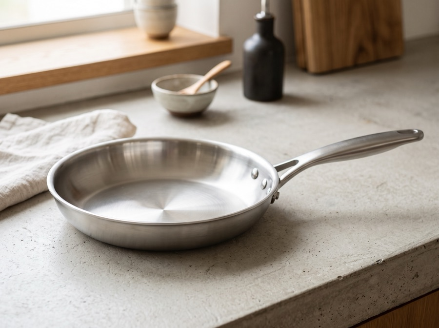

後加工・刻印
名前入れ・イニシャル刻印
鏡面仕上げ後にレーザーで一本ずつ刻印。柄の形は変わりません。¥550/本〜、納期約2週間。
プレス加工は金型を使って一気に成形する量産方式です。逆にいえば、成形後の「後加工」の範囲であれば、 金型に触れずにお一人おひとりのご注文に対応できます。以下はその代表例です。
鏡面仕上げ後にレーザーで一本ずつ刻印。柄の形は変わりません。¥550/本〜、納期約2週間。

同じ型の製品でも、研磨の仕上げ方を鏡面またはヘアラインから選べます。

「かちこみ」と呼ばれる技法で、鍋底に磁性ステンレスプレートを圧着。鍋の形状はそのままにIH対応にできます。¥2,200〜。

木製・樹脂ハンドルは、取り付け部が共通規格の既存バリエーションから選べます。

刃を研ぐ角度の調整のみのため、型には影響しません。ご注文時にお選びいただけます。

鍋の直径や深さ、持ち手の形そのものを変えるには、新しい金型が必要になります。簡易的な金型でも数十万円規模の初期費用がかかるため、個人のお客様お一人分としてはお受けできません。飲食店様や施設様など、目安50個以上のご注文であれば、新規金型の製作からご相談に応じます。まずはお問い合わせください。
ご希望の商品・刻印内容・数量をメールまたは直売所でご相談ください。
刻印書体や仕様について、担当者と内容を確定します。
プレス・研磨・刻印の各工程を経て制作します(目安2〜4週間)。
検品後、丁寧に梱包してお届けします。
お問い合わせは order@tsubame-press.example.jp(デモ用架空アドレス)まで。詳しくはよくあるご質問もご覧ください。